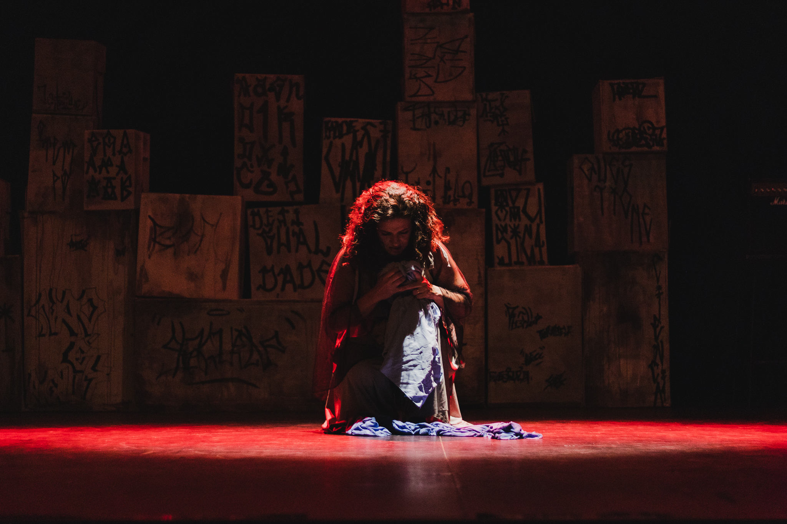

PEÇA
"A que faz" propõe uma imersão na saga de mulheres cientistas a partir do ponto de vista de uma menina, de uma mulher e de uma senhora. A história se passa na cidade fictícia de "Não é Aqui", com uma narrativa não linear que conta a trajetória de mulheres e cientistas ao longo de 50 anos.
As mulheres são as protagonistas de ciclos que, em vez de se repetir, se modificam. Alguns ciclos se modificam na memória, ressignificando uma existência; outros se modificam pela ação intencional e aquilo que dela resulta, redesenhando trajetórias. Afinal, o que faz uma mulher cientista?